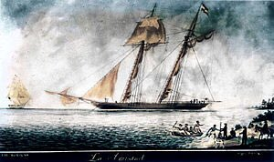
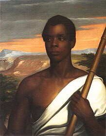
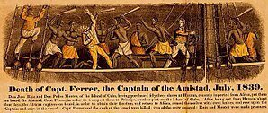
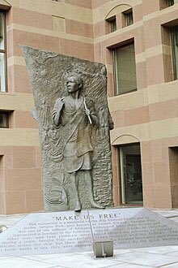
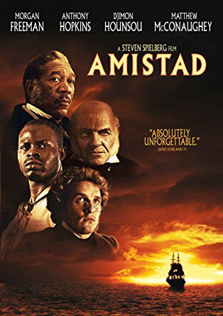

Los Hilos de Monik
Los esclavos de la goleta La Amistad
Publicado el 12 de agosto de 2020 - 13 tweets - Hilo original en Twitter
1
¿Cómo unos esclavos africanos provenientes de Cuba terminaron ganando un caso en la Corte Suprema de los Estados Unidos y convirtiéndose en un símbolo de la lucha abolicionista en ese país?
Esta es la historia de los esclavos de la goleta La Amistad.
2
En 1839 Don José Ruiz y Don Pedro Montes compraron en La Habana esclavos africanos de la etnia Mende (provenientes de Sierra Leona) traficados ilegalmente por portugueses.
Rentaron la goleta española La Amistad para trasladarlos a Puerto Príncipe.
3
Al cocinero del barco se le ocurrió bromear diciéndole a los esclavos que los habían comprado para matarlos, salarlos y cocinarlos.
Uno de ellos, Sengbe Pieh (también conocido como Cinqué) logró zafarse de sus ataduras y liberó a los otros, iniciando una revuelta.
4
Mataron al capitán de la goleta... y al cocinero.
Ordenaron poner rumbo a Africa, pero los dueños Ruiz y Montes los engañaron, dirigiéndose a EE.UU. con la esperanza de ser rescatados por barcos españoles
2 meses después los interceptó un barco americano en Long Island, NY.
5
Algunos esclavos lograron escapar del barco pero fueron capturados en las inmediaciones.
Tras dar su versión los españoles, los esclavos fueron enviados a prisión acusados de motín y asesinato.
Ninguno de los esclavos hablaba inglés y no podían explicar su situación.
6
Josiah Gibbs, un profesor de Yale y anti esclavista se comprometió a encontrarles un traductor.
Logró aprender a contar hasta 10 en Mende y se fue al puerto gritando esas palabras a ver quien las entendía.
Pues sí, encontró a James Covey, un marinero que hablaba el idioma.
7
Tras la traducción, se acusó a Ruiz y Montes de trata ilegal.
España pidió al Pdte. Van Buren devolverlos a Cuba para ser juzgados, pero el Sec. de Estado Forsyth se negó diciendo que ello constituiría una intervención federal en la jurisdicción del estado de Connecticut.
8
En el juicio debía determinarse si los esclavos eran propiedad de España (basándose en el reclamo de Isabel II), si podían ser considerados botín de los marinos estadounidenses, y si las circunstancias del tráfico significaba que los esclavos tenían derecho a rebelarse.
9
Varios abolicionistas estadounidenses crearon el Comité Amistad para recaudar fondos.
El ex-presidente John Quincy Adams fue quien representó a los esclavos en la corte.
Tras ganar varias rondas judiciales, las apelaciones llegaron hasta la Corte Suprema de los EE.UU.
10
En 1841 la Corte Suprema dictaminó que los Mende habían sido ilegalmente transportados y convertidos en esclavos. Y que se habían rebelado en defensa propia.
Gracias a la ayuda de la United Missionary Society 35 de ellos pudieron regresar a Sierra Leona.
11
La historia de los esclavos de La Amistad dejó un legado.
En New Heaven, Connecticut hay un monumento llamado Amistad Memorial.
La Universidad de Tulane, New Orleans, tiene el Amistad Research Center que estudia la época de la esclavitud.
12
La Univesidad de Yale conserva retratos de los esclavos, dibujados por William H. Townsend durante el juicio.
En 1997 Steven Spielberg llevó al cine una versión de los hechos, con su película “Amistad”, donde Morgan Freeman encarna a Cinqué.
13
Y finalmente, una réplica actual de la goleta La Amistad, es actualmente usada para viajes educativos con estudiantes de Connecticut.
En 2010 estuvo en La Habana, trayendo incluso un estudiante de Sierra Leona.
14
A todo esto añadir que el Círculo de Hacendados ponía trabas, pedía plazos y justificaba las continúas fluctuaciones del número de esclavos.I
Con la nueva ley de abolición de 1880, las autoridades se pusieron las pilas (en 10 años la abolición casi no había avanzado)
Lea Replica of 1839 slave ship Amistad, originally from Cuba and rebuilt in US, docks in Havana